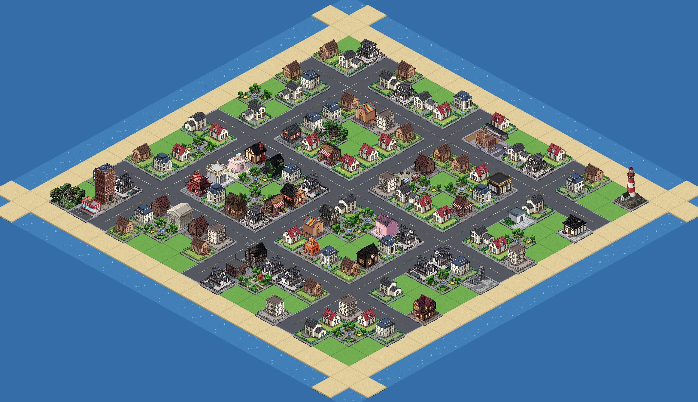

資金
G
今月の売上
G
1年目
3
月
24
日
決裁待ち
ブランド力
16
エリア
2
位
目次
速報
物流
人事
経営企画
提案
マーケ
システム
MY CRYPTO SUCCESSOR
手触りラボ
目次から入る
UI・動き・音の方向を、
触って比べる見本（その 2）
方向 B
号
外
刷りたての号外・動く活字
タップしてはじめる
音が出ます（設定で消せます）
この見本は JavaScript を使います。